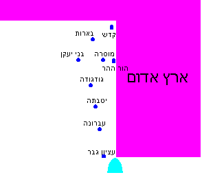

קוד: דברים ט-י בתנ"ך
סוג: לא גמור
מאת: אראל
אל: לא גמור
בקריאה ראשונה נראה, שהנושא העיקרי בפרקים אלה הוא – תוכחה של משה לבנ"י על מעשה העגל. ברוב הפרשה פונה משה בגוף שני, למשל (ט24) "
". אולם באמצע פרק י (6 - 7) יש שני פסוקים שנראים ממש לא שייכים לכל הפרשה:
ממרים
הייתם עם ה'
ובני ישראל נסעו מבארות בני יעקן מוסרה; שם מת אהרון
וייקבר שם, ויכהן אלעזר בנו תחתיו. משם נסעו הגודגודה, ומן הגודגודה
יוטבתה, ארץ נחלי מים.
הפסוקים לא שייכים מכמה סיבות:
"), אבל המסעות של בנ"י "הגודגודה, ומן הגודגודה יוטבתה..." לא קשורים בכלל.ובאהרן התאנף ה' מאד להשמידו...
" בגוף שלישי, בניגוד לכל הפרשה, שנאמרה בגוף שני!בני ישראל
לא מצאתי אף מפרש שמתייחס ל
כל השאלות האלו. רובם
מתייחסים בעיקר לנושא של מות אהרן ומקשרים אותו למעשה העגל, אבל כמעט אף
מפרש לא מסביר למה הכתוב מציין את המסעות לגודגודה ויוטבתה, וכמעט אף מפרש לא מתייחס לשינוי בין גוף שני לגוף שלישי.
עקידת-יצחק (ובעקבותיו
אברבנאל ומלבי"ם) פירש שאהרן לא מת בעוון מי מריבה אלא בעוון העגל; חסיפור
של מי-מריבה הוא רק 'עילה'. ה' בכוונה גרם לאהרן לחטוא במי מריבה, כדי
שיוכל להעניש אותו על חטא קטן, ולהסתיר את העובדה שהוא נענש בגלל חטא גדול
יותר. ההוכחה לכך היא, שבאותה תקופה היו בני-ישראל במקומות עם הרבה מים -- "מבארות... ארץ נחלי מים
"; באופן טבעי לא היתה
להם שום סיבה להתלונן על המים. אבל ה' הביא אותם באופן על-טבעי למקום שבו
לא היו מים, כדי שיתלוננו, וה' יוכל להעניש את אהרן על החטא הקטן (מלבי"ם
מסביר את זה יותר טוב ממני). הבעיה היא, שלפי הפירוש הזה היה ראוי להזכיר
בפסוק את המקום שבו קרה החטא של מי מריבה ולא את המקום שבו מת אהרן!
העובדה שאהרן מת ונקבר באיזור שיש בו הרבה מים לא מוכיחה שום דבר לגבי
הסיבה שבגללה הוא מת, כך שההסבר היפה הזה עדיין לא פותר את השאלה!
כלי-יקר והעמק-דבר פירשו על-דרך הדרש (ע' שם). ספורנו פירש שיש כאן תוכחה לבני-ישראל, אבל לפי זה היה ראוי לכתוב את הפסוקים בגוף שני, כמו את שאר כל התוכחות בפרשה. לפירוש של רש"ר הירש נחזור בהמשך.
הרמב"ן אמר שבפסוקים האלה אין תוכחות אלא רק תיאור של מסעי בני ישראל, ולכן הם כתובים בסגנון שונה. אבל לא הבנתי, לפי דבריו, למה צריך באמצע פרשה של תוכחות לספר על מסעי בני ישראל.
ויסעו מרתמה, ויחנו ב... ויסעו מחשמונה, ויחנו
במוסרות. ויסעו ממוסרות, ויחנו
בבני יעקן. ויסעו מבני יעקן, ויחנו
בחור הגדגד. ויסעו מחור הגדגד, ויחנו
ביוטבתה. ויסעו מיוטבתה, ויחנו
בעברונה. ויסעו מעברונה, ויחנו
בעציון גבר. ויסעו מעציון גבר, ויחנו במדבר צין, היא
קדש. ויסעו מקדש, ויחנו
בהור ההר, בקצה ארץ אדום. ויעל אהרון הכוהן אל הור ההר, על פי ה'; וימת שם בשנת הארבעים לצאת בני ישראל מארץ מצריים...
גם בבמדבר כ 22 - 29 מסופר שבנ"י נסעו מקדש אל הור-ההר, ושם מת אהרון, ואלעזר בנו כיהן תחתיו.
הפירוש הטוב ביותר שמצאתי הוא של רד"צ הופמן, וכדי להבין אותו נתבונן במפה אפשרית סכימטית ביותר של האיזור (אי אפשר לדעת בוודאות איפה נמצאים המקומות – אפשר רק לשער):

אחרי חטא המרגלים (שהיה, לפי רוב המפרשים, ב"
", היא קדש ברנע), פנו בנ"י דרומה, לכיוון ים סוף (ע' דברים ב 1). הם הסתובבו באזור הר שעיר (על גבול ארץ אדום) "רתמה
" (דברים ב 2), חנו במקומות שונים
(המקומות הכתובים בפרשת מסעי), ולבסוף הגיעו לקצה הדרומי של הר שעיר –
עציון גבר. מעציון גבר פנו בנ"י צפונה, והגיעו במסע אחד לקדש, ומשם בקשו
ממלך אדום שייתן להם לעבור בארצו כדי להגיע ישר לארץ כנען (במדבר כ 14).
אך מלך אדום סירב, ולכן נאלצו בנ"י לפנות שוב דרומה כדי להקיף את ארץ
אדום. בדרכם דרומה הם עברו שוב ליד אותם המקומות שהיו בהם קודם (בסדר אחר)
– הם עברו ליד בני-יעקן, מוסרה, גודגודה ויטבתה. בזמן שעברו במוסרה עלה אהרן להור-ההר, שהוא הר שנמצא ליד מוסרה, ושם מת.
ימים רבים
המקומות האלה לא כתובים שוב בפרשת מסעי – כי בפרשה זו נזכרת כל 'תחנה' של בני ישראל רק פעם אחת. הסבר אחר: בפרשת מסעי נזכרים רק המקומות שבנ"י חנו בהם. אבל בפעם השניה בני ישראל לא חנו במקומות האלה אלא רק עברו דרכם.
לפי זה עדיין יש להסביר: למה בפסוקים בספר דברים לא נזכר בכלל
הור-ההר? למה כל הסיפור מסופר מנקודת המבט של בני-ישראל בלבד ולא של אהרן?
"). אמנם השאלה הזו קלה יותר, כי 3 הפסוקים האלה לפחות מתאימים לנושא הכללי (החטאים של בנ"י במדבר), והם נאמרים בגוף שני כמו כל הפרשה. אבל בכל זאת – נראה שהיה מתאים יותר לכתוב אותם בסוף, אחרי סוף הסיפור של חטא העגל (י11).ובתבערה ובמסה ובקברות התאווה מקציפים הייתם את ה'...
שמע ישראל! אתם עוברים היום את הירדן, לבוא לרשת גויים
גדולים ועצומים ממך, ערים גדולות ובצורות בשמיים. עם גדול ורם, בני ענקים,
אשר אתה ידעת ואתה שמעת – מי יתייצב לפני בני ענק?!
משה מכין את בנ"י לניסים הגדולים שיעשה עמהם ה' כשייכנסו לארץ:
וידעת היום, כי ה' א-להיך הוא העובר לפניך, אש אוכלה, הוא ישמידם והוא יכניעם לפניך, והורשתם והאבדתם מהר כאשר דיבר ה' לך.
מכאן והלאה דן משה בסיבות שבזכותן יזכו בני ישראל לכל הניסים האלה. הוא מציג קודם אפשרות לא נכונה:
(פירוט)
אל תאמר בלבבך, בהדוף ה' אותם מלפניך, לאמור: "בצדקתי הביאני ה' לרשת את הארץ הזאת, וברשעת הגויים האלה ה' מורישם מפניך".
הוא דוחה את האפשרות הזאת:
(א)
לא בצדקתך וביושר לבבך אתה בא לרשת את ארצם...
ואז מציג את שתי הסיבות האמיתיות:
(ב)
כי ברשעת הגויים האלה ה' א-להיך מורישם מפניך,
(ג)
ולמען הקים את הדבר אשר נשבע ה' לאבותיך, לאברהם ליצחק וליעקב.
כעת רוצה משה להוכיח את הטענות שלו. קודם הוא רוצה להוכיח שאפשרות (א) אינה נכונה. לכן הוא אומר:
וידעת כי לא בצדקתך ה' א-להיך נותן לך את הארץ הטובה הזאת
לרשתה, כי עם קשה-עורף אתה. זכור, אל תשכח, את אשר הקצפת את ה' א-להיך
במדבר, למן היום אשר יצאת מארץ מצרים עד בואכם עד המקום הזה, ממרים הייתם
עם ה'.
הוא מביא כמה דוגמאות לטענה הזאת:
1. (ט8 - ט21)
ובחורב הקצפתם את ה'... ואשליך את עפרו אל הנחל היורד מן ההר.
2. 3. 4. (ט22)
ובתבערה ובמסה ובקברות התאווה מקציפים הייתם את ה'.
5. (ט23)
ובשלוח ה' אתכם מקדש ברנע... ולא שמעתם בקולו.
ולסיכום (ט24):
ממרים הייתם עם ה' מיום דעתי אתכם.
לאחר מכן הוא רוצה להוכיח שסיבות (ב) ו(ג) הן הסיבות הנכונות. לשם כך הוא חוזר לדוגמה 1 – הדוגמה של חטא העגל, ומספר לבנ"י בזכות מה הם ניצלו מהשמדה – איזו תפילה הוא התפלל שגרמה לה' לבטל את הגזירה. בתפילה (ט25 - ט29) נזכרים כמה נושאים, וביניהם:
(ט27)
זכור לעבדיך, לאברהם ליצחק וליעקב; אל תפן אל קשי העם הזה ואל רשעו ואל חטאתו.
(ט28)
פן יאמרו הארץ אשר הוצאתנו משם: 'מבלי יכולת ה' להביאם אל הארץ אשר נשבע להם, ומשנאתו אותם, הוציאם – להמיתם במדבר'.
ט27 מתייחס לסיבה (ג), ו ט28 מתייחס לסיבה (ב), כלומר:בנ"י ניצלו מהשמדה בזכות האבות ובגלל רשעת הגויים.
הניתוח הזה מסביר די טוב (לענ"ד) את המבנה של פרק ט, והוא גם עונה לשאלה ה'קלה' מסעיף II.
נראה שהפרשה היתה אמורה להסתיים בזה: משה הוכיח את טענותיו, והוא יכל להגיד לבנ"י ישר (י 10 - 11) "
" אבל לפני הסיום הזה יש עוד תשעה פסוקים ובהם שלושה נושאים:
...וישמע ה' אלי גם בפעם ההיא, לא אבה ה' השחיתך. ויאמר
ה' אלי: קום, לך למסע לפני העם, ויבואו ויירשו את הארץ אשר נשבעתי לאבותם
לתת להם.
(י1 - י5): "
";
בעת ההיא אמר ה' אלי: פסל לך שני לוחות אבנים כראשונים... ויהיו שם כאשר ציווני ה'
(י6 - י7): "
"
ובני ישראל נסעו מבארות בני יעקן מוסרה, שם מת אהרן וייקבר שם ויכהן אלעזר בנו תחתיו... ומן הגודגודה יטבתה ארץ נחלי מים
(י8 - י9): "
".
בעת ההיא הבדיל ה' את שבט הלוי.. ה' הוא נחלתו כאשר דיבר ה' א-להיך לו
הנושא הראשון עוסק במציאת 'תחליף' ללוחות הברית: לוחות הברית הראשונים אמנם נשברו, אבל במקומם (י1 - י2): "
". ה' ציווה על משה לעשות 'שחזור' של הלוחות הראשונים. ה' גם ציווה עליו לעשות "
בעת ההיא אמר ה' אלי: 'פסול לך שני לוחות אבנים
כראשונים, ועלה אלי ההרה, ועשית לך ארון עץ. ואכתוב על הלוחות את
הדברים אשר היו על הלוחות הראשונים אשר שיברת; ושמתם בארון
" עוד לפני שעלה להר – כדי שיהיה לו מקום לשים בו את הלוחות כשיירד, כדי להדגיש שהלוחות נועדו הפעם להיות נצחיים ולא להישבר.
ארון עץ
הנושא השני והנושא השלישי עוסקים במציאת 'תחליפים' לאהרן הכהן:
אלעזר החליף את אהרן אחרי מותו, וגם הלויים נזכרו לראשונה כתחליף לאהרן
(שמות לב 25): "
". המילים "
וירא משה את העם כי פרוע הוא,
כי פרעו אהרון לשמצה בקמיהם. ויעמוד משה בשער המחנה, ויאמר: 'מי לה' אלי?';
וייאספו אליו כל בני לוי... ויאמר משה: מלאו ידכם היום לה'...
" מתייחסות כנראה לאותו ארוע – ה' הבדיל את שבט הלוי לאחר שמילאו את מקומו של אהרן וקינאו לה'.
בעת ההיא הבדיל ה' את שבט הלוי
מה הקשר בין הנושאים האלה לבין הטענות של משה רבנו בפרשה?
לפני שנענה על זה נזכיר, שכאשר ניסה משה להוכיח לבנ"י את שלוש הטענות שנזכרו למעלה – היתה לו מטרה מעשית בכך. הוא רצה להסביר לבנ"י שהם לא מושלמים – הם עדיין "עם קשה עורף". אומנם ה' ייתן להם את הארץ בזכות האבות וברשעת הגויים, אך כדי שהארץ תתקיים בידם לאורך זמן הם חייבים לשפר את מעשיהם ולחזור לתורה, כמו שהוא מפרט בהמשך (י12 - יא25).
מצאתי כמה הסברים לקשר בין הנושאים שבפרק י לטענות מפרק ט:
הסבר ראשון: משה רבנו עדיין לא סיים להוכיח את טענותיו:בנ"י יכולים לטעון נגדו: 'אתה טוען שניצלנו מהשמדה בזכות התפילה שלך. אבל לפני התפילה (ט 18) עשית עוד משהו – שברת את הלוחות (ט 17). אולי ניצלנו מהשמדה בזכות שבירת הלוחות? אולי הפתרון לכל בעיותינו הוא להתנתק מלוחות הברית, ולבטל את הברית עם ה', ואז נוכל להמשיך ולהיות 'קשי עורף'? ועוד – גם לאחר התפילה עדיין רצה ה' להשמיד את אהרן (ט 20). הרי הגורם לכל הצרות בפרשת העגל היה אהרן הכהן -- אולי הפתרון לכל בעיותינו הוא להתנתק מהכהונה?'.
הטענות האלו נשמעות מוזרות, אבל גם בימינו יש רבים מבני-ישראל
שטוענים טענה דומה -- שהפתרון לכל בעיותינו הוא להתנתק מהתורה או מחלקים
שלה. כדי לדחות את הטענה הראשונה סיפר משה לבנ"י על הלוחות השניים, כשהוא
מדגיש שוב ושוב שהלוחות האלה היו "
", הדברים שנכתבו עליהם היו "
שני לוחות אבנים
כראשונים
", והמכתב היה "
הדברים אשר היו על הלוחות
הראשונים אשר שיברת
",
המסקנה היא, שבנ"י לא יכולים להתנתק מהתורה – גם אם יחטאו ויהיו קשי-עורף
הם ייאלצו בסוף לחזור לתורה הראשונה ולדברים הראשונים [רש"ר הירש]. כדי
לדחות את הטענה השניה סיפר משה לבנ"י על שני ה'תחליפים' שנמצאו לאהרן –
אלעזר בנו החליף אותו לאחר מותו, וגם קודם לכן – מייד לאחר חטא העגל –
נמצא לו תחליף – הלויים מלאו את מקומו ונבחרו מאז "
כמכתב
הראשון
" בנ"י גם לא יכולים להתנתק מהכהונה: אהרן הכהן חטא ומת, אבל הכהונה תמשיך להתקיים.
לעמוד לפני ה', לשרתו ולברך בשמו.
הסבר שני: בנ"י יכלו לטעון טענה אחרת – 'אם ה' סלח לנו למרות שהיינו קשי-עורף – כנראה שה' צריך אותנו, יש לנו
תפקיד בעולם, ולכן אנחנו יכולים להמשיך לחטוא וה' תמיד יסלח לנו... '.
כדי לדחות את הטענה הזאת רצה משה להראות לבני ישראל שלכל דבר יש תחליף:
ללוחות הראשונים, שנשברו, נמצא תחליף; לאהרן הכהן, שחטא ועשה את העגל,
נמצאו תחליפים; אז גם להם יכול להימצא תחליף. ה' הרי אמר למשה (ט 14) "
"!
אמנם, בעבר האפשרות הזו נדחתה ולא התממשה, ועם ישראל לא הושמד, אבל באופן
תיאורטי האפשרות הזו עדיין קיימת, והיא יכולה גם להתממש במציאות (יא 17).
לכל דבר בעולם יש תפקיד, וכאשר הוא לא ממלא את תפקידו – ה' מוצא לו תחליף
שימלא את התפקיד במקומו [ע' רש"ר הירש על דברים ט 7].
הרף ממני ואשמידם, ואמחה את שמם מתחת השמיים, ואעשה אותך לגוי עצום ורב ממנו
הסבר שלישי: משה רצה לדחות את הטענה הזאת באופן אחר: הוא רצה
להראות לבני-ישראל כמה הם הפסידו מכך שהיו עם-קשה-עורף. אמנם הם ניצלו
מהשמדה, אבל המעמד שלהם ירד. במקום הלוחות הראשונים, הא-להיים והפלאיים, הם קיבלו לוחות טבעיים, מעשה ידי אדם (פירוט). במקום התגלות א-להית גלויה (ט15 -- "
ואפן וארד מן ההר
") הם קיבלו התגלות נסתרת, בדרגה נמוכה יותר (י5 – ",
וההר בוער באש, ושני לוחות הברית
על שתי ידי
ואפן וארד מן ההר
").
הם הפסידו את אהרן, הכהן האהוב עליהם, ובמקומו קיבלו כהן אחר – פחות אהוב
על אהרן הכהן בכו 30 יום לאחר מותו (ע' במדבר כ 29), אך על אלעזר הכהן
בכלל לא בכו כשהוא מת (ע' סוף יהושע), ועמו שבט שלם שאין לו נחלה בארץ.
, ואשים את הלוחות
בארון אשר עשיתי, ויהיו שם כאשר ציווני ה'
קודם כל -- נשים לב שיוטבתה היא ארץ דומה לארץ ישראל – גם ארץ ישראל היא "
" (דברים ח 7).
ארץ נחלי מים
". לכל אדם יש תחליף – אפילו לאהרן הכהן. אין אדם שאי-אפשר בלעדיו. לכן המסע מתואר מנקודת-המבט של בני-ישראל ולא של אהרן.ארץ נחלי מים
"). אהרן היה מאד אהוב על ישראל, והעובדה שהוא לא זכה להגיע לארץ היא הפסד גדול עבור בנ"י.ארץ נחלי מים
ההסבר השני נראה לי יותר, אבל אני לא כל כך מצליח לנסח אותו, ולכן נראה
לי שעדיף לקרוא אותו ישר מהמקור - פירוש רש"ר הירש על דברים ט 7).
הסגנון של הפסוקים מראה שהם אינם דברי משה אלא דברי הספר (כמו בדברים ד 41 - 43). השאלה היא האם הם היו אמורים להיות בנאום של משה רבנו או לא:
" (תחילת פסוק 8). במקרה זה צריך להסביר למה ה' ציווה על משה להוסיף את הפסוקים האלה לנאום בזמן עריכת הספר, ולזה עדיין לא מצאתי הסבר......ויהיו שם, כאשר ציווני ה'. בעת ההיא הבדיל ה' את שבט הלוי...